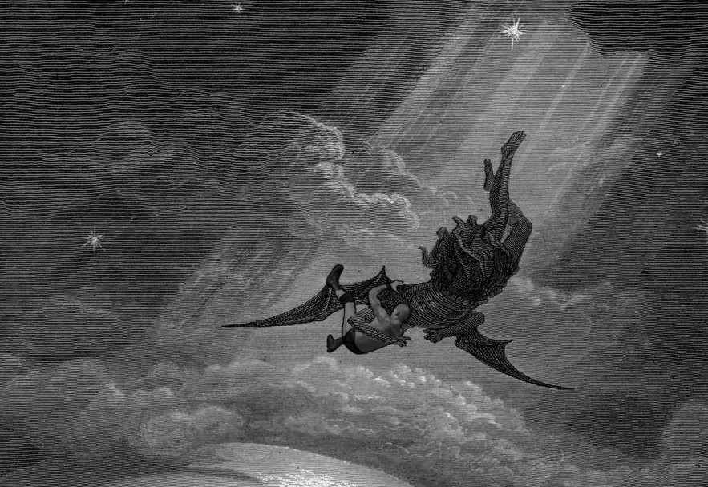

"Mess up once, it looks ugly. Mess up many times, then it becomes your style" - unkown

This project was made during my Art-74 class and created using photoshop. The original comes from the the artist Gustav Dore for his Illustration of The Fall of Lucifer for John Milton's poem Paradise Lost. The abrahamic religions often tell that Lucifer was cast out of heaven for betraying god. This a game-changer, an act that caused evil to exist in our world. Just like the famous WWE superstar Randy Orton's signature move, the RKO, it is also a game-changer that flips the whole momentum of the wrestling match. By mashing the two together, this displays the humorous side of what we believe to be impactful today compared to what we believed was impactful in the past.